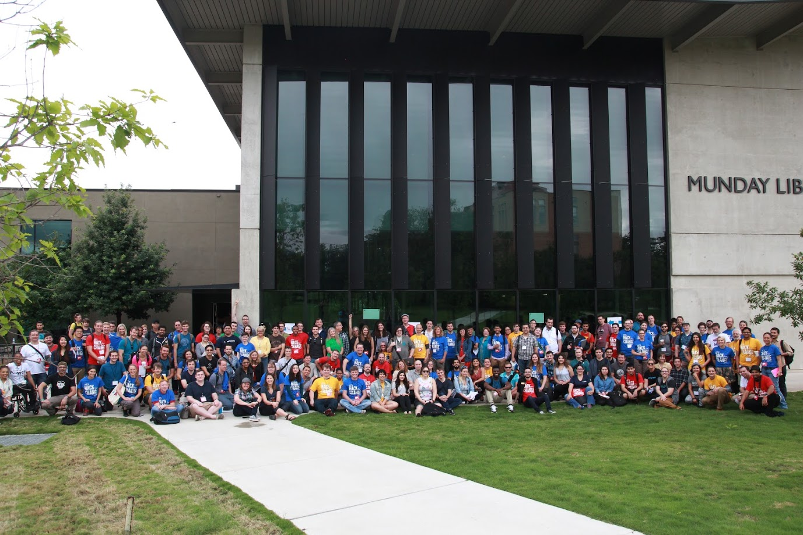
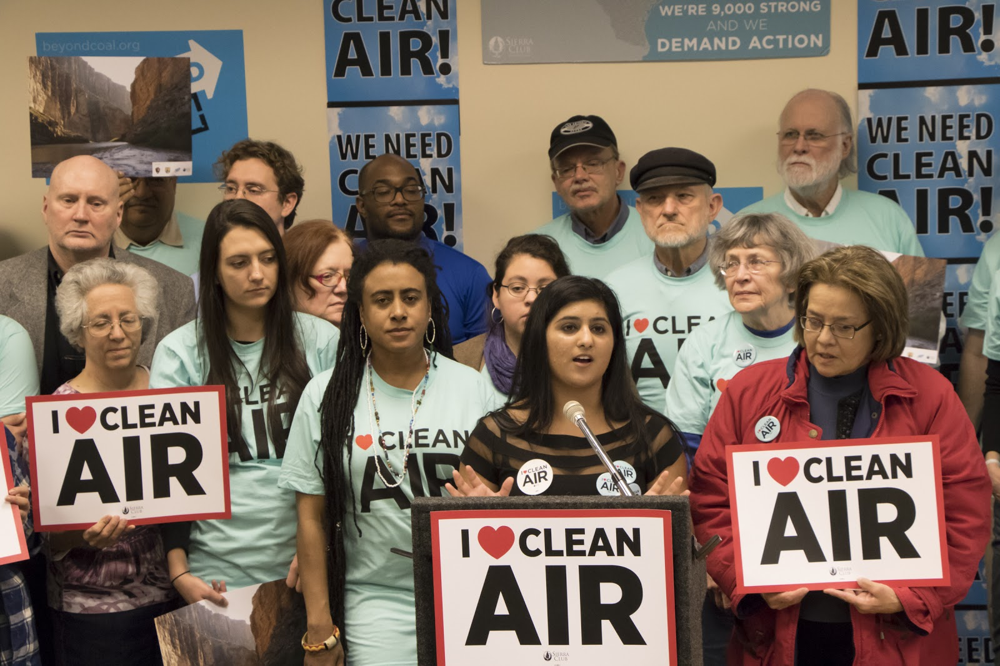
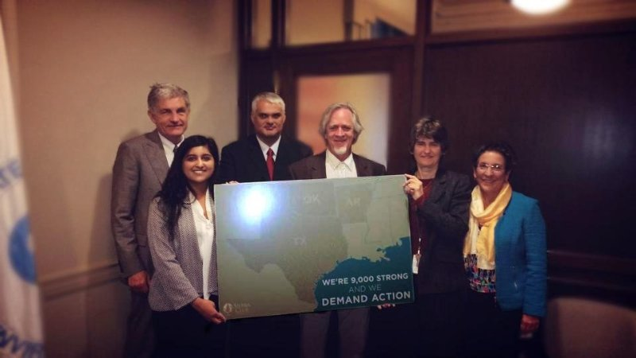
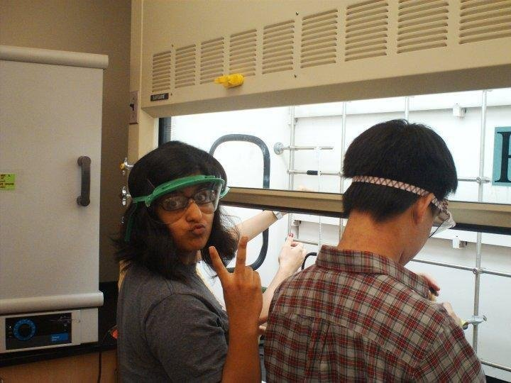

• Managing all strategic and operational activities regarding ATX Hack for Change
• Formulating local, national and global community awareness and engagement goals through the creation of a robust event sponsor and partner program
• Overseeing brand management and marketing to align with event development and growth; redesigned logo and materials for 2016 event
• Building and managing the website; from writing original content, design to drawing technical wireframes
• Implementing social media strategy and monitoring all multimedia content on all social media platforms
• Developing a repository of operational materials for long term, sustainable project success
Youtube Link

• Assisting with event logistics on Digi Girlz; a Microsoft YouthSpark program, which gives middle and high school girls opportunities to learn about careers in technology and computer science.
• Presenting civic hacking opportunities for future engagement to make an impact on local and global social issues
Youtube Link
• Oversees strategic communication planning and all written/multimedia materials
• Directs community outreach and OIT showcase events at SXSWedu
• Directs the in-house production of communication materials: print, web and video
• Collaboratively leads the development and execution of strategies for enhancing cross-functional communication within OIT and with external-facing entities
• Demonstrated OK, AR, and TX stakeholder concern on the Regional Haze (RH) rule to U.S. EPA
• Orchestrated volunteer fly-in to EPA HQ in Washington, D.C. to highlight RH work
• Project Manager for both Austin and Oklahoma City RH EPA Public Hearings
• Project Manager and Trainer for the Sierra Club Apprenticeship Program 2014-15
• Creator of @BeyondCoalTexas and updated the Beyond Coal Texas website

• Demonstrated OK, AR, and TX stakeholder concern on the RH rule to EPA
• Conducted informational sessions with federal and gov. agencies in OK, AR, and TX
• Drafted RH press releases, blogs, email content, and fact sheets.
• Social Media Coordinator for Dallas EPA Hearing and New Orleans Coal Exports Meeting
Texas Green Blog

• Selected to write promotional blog content to assist in client advertising
Event Promotions Blog
• Co-creator of CBS student blog that streamlined academic processes
CBS Student Blog
• Chosen to assist with experiments to transfect cells with light producing enzymes to use as a model system for testing contrast agents with quarterly presentations to research team
